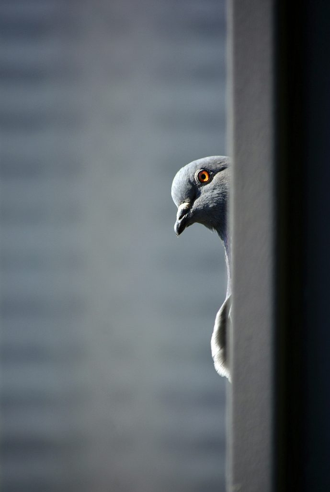

Visual perception & categorization
How animals see, discriminate, and organize visual information.
Animal cognition · Perception · Learning
Welcome to the Comparative Perception and Attention Laboratory (CoPAL), where we explore how animals perceive, learn about, and navigate their world.
Explore our research
About the laboratory
CoPAL is a research laboratory at Drake University in Des Moines, Iowa. From pecking pigeons to tropical cockroaches navigating puzzles, our research looks at what behavior can tell us about cognition across species.
Our laboratory also provides opportunities for undergraduate students to participate in scientific research.
Our research
How animals see, discriminate, and organize visual information.
How animals learn relationships and use information about their world.
How animals perceive and organize numbers and other magnitudes.
Exploring behavior and cognition in animals with very different nervous systems.
More detailed research pages, publications, and lab member information will be added as we migrate the existing website.
Find us
Department of Psychology · Drake University · Des Moines, Iowa
This is the independently hosted website of CoPAL, a laboratory affiliated with Drake University.